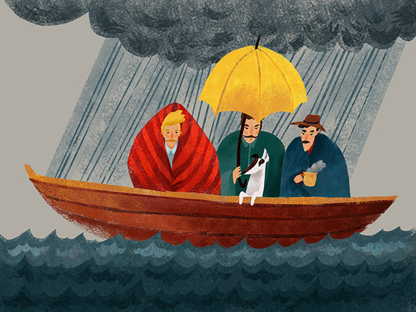
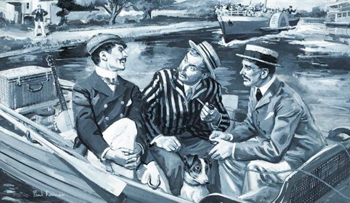

Jerome K.Jerome "Three Men in a Boat (To Say Nothing of the Dog)"

Book history
Three Men in a Boat (To Say Nothing of the Dog),published in 1889,is a humorous account by English writer Jerome K. Jerome of a two-week boating holiday on the Thames from Kingston upon Thames to Oxford and back to Kingston. The book was initially intended to be a serious travel guide,with accounts of local history along the route, but the humorous elements took over to the point where the serious and somewhat sentimental passages seem a distraction to the comic novel. One of the most praised things about Three Men in a Boat is how undated it appears to modern readers – the jokes have been praised as fresh and witty.
The three men are based on Jerome himself (the narrator Jerome K. Jerome) and two real-life friends, George Wingrave (who would become a senior manager at Barclays Bank) and Carl Hentschel (the founder of a London printing business, called Harris in the book), with whom Jerome often took boating trips. The dog, Montmorency, is entirely fictional but, "as Jerome admits, developed out of that area of inner consciousness which, in all Englishmen, contains an element of the dog".The trip is a typical boating holiday of the time in a Thames camping skiff.
Following the overwhelming success of Three Men in a Boat, Jerome later published a sequel, about a cycling tour in Germany, titled Three Men on the Bummel (also known as Three Men on Wheels, 1900).
Summary
Three Men in a Boat starts with three friends named Jerome, George, and Harris smoking together in their apartment in London. They are all hypochondriacs and always talk about their illnesses. After doing some research on various diseases at the British Museum, J. somehow concluded that he has all the diseases known to man except for housemaid’s knee. The friends then make a plan of taking a vacation together as it would be good for their health. After some contemplation, they decide to spend a week rowing up the Thames with their dog, Montmorency.
The men then make the necessary arrangements for the trip and choose to bring a cover for the boat and sleep in it, instead of carrying a tent or living at an inn. They make a long list of items but then realize that they ideally need to only carry the essentials. Although they are friends, J. doesn’t really like Harris and compares him at length to J.’s incompetent Uncle Podger. They finally decide to bring a hamper of food, clothing, a methylated spirit stove for cooking and a cover for the boat.
The friends sleep too long but ultimately get on a train to Kingston, from which they will start their journey, on the first morning of the trip. J. mentions some local landmarks, including Hampton Court and some pubs that Queen Elizabeth dined in. Harris narrates an incident about getting lost in the hedge maze at Hampton Court.
The men then go through their first lock, which is a canal set off from the river that allows boats to pass through a steep area. J. immediately talks about how irritating it is when women wear ‘boating clothes’ that are too flimsy to get wet. George then moves away from his group to do some work for his employer in Shepperton. Harris then gives the idea of visiting a cemetery to see an interesting tombstone, but J. rejects his plan. Harris then falls into the food hamper while trying to find a bottle of whiskey.
When J. and Harris have a lunch break on the riverbank, a man lands up blackmailing them and accuses them of trespassing the area. Harris, who has a tall and huge frame, physically intimidates the visitor and they carry on their journey. J. talks about some more local points of interest, and the two men join George in Shepperton.
Harris and J. persuade George that they should tow the boat from the shore, which can be a difficult task leading to problems if the tower becomes distracted. The men then have an enjoyable dinner and sleep in the boat at night. The next morning, they get up early and George narrates a story about forgetting to wind his watch and starting his workday six hours early to J., who then falls in the water and Harris tries to make scrambled eggs but is unsuccessful.
The men pass Datchet and remember the time when they were trying to find a place to sleep there on another trip when the inns were full. They all sleep at an inn in Marlow on that night. Montmorency runs after a big cat but gets quite scared to attack it. The next day, they cross more interesting historical landmarks including Bisham Abbey.
Their drinking water gets over and they get appalled when a local lock-keeper asks them to drink from the river. Harris loses his balance and falls off the edge of a gulch while eating supper. The next evening, they make delicious Irish stew and George merrily plays the banjo. But he is a just an amateur and his music is so bad that Harris and J. request him to never play banjo for the rest of the trip.
George and J. go out to have a couple of drinks in the town of Henley the same night, but get lost on their way back. They somehow manage to find Harris sleeping in the boat, who then explains to them that he had to move the boat as he was attacked by a flock of aggressive swans.
The friends pass through Reading and as they approach Goring, they see a woman’s corpse floating in the water. They later find out that the lady had drowned herself after having a child before marriage and was unable to support it. The men try to wash their clothes in the Thames, but the clothes become dirtier and their effort goes in vain. That night, they again go out for drinks at a pub in Wallingford.
They later move toward Oxford, where they would turn back and come over to London. J. talks about an incident where he and George had gone for rowing and ruined a professional photographer’s pictures by falling over at the same moment. J. goes on to describe the attractions of Dorchester, Abingdon, and Clifton, which include Roman ruins and the grave of a man who had 197 children. They then steer through a tricky stretch of river near Oxford and spend two days there. J. disrupts the story and warns the readers that it is not a good idea to rent a boat in Oxford as they are of poor quality.
While on the way back from Oxford, it starts raining and the men land up being cold, wet, and wretched. They soon settle abandoning the boat and spend the rest of the trip at an inn. That night, they indulge in a scrumptious supper and feel happy about their decision to abandon the boat when things got tough. Montmorency barks in agreement in the end.
Quotes
“Fox-terriers are born with about four times as much original sin in them as other dogs are, and it will take years and years of patient effort on the part of us Christians to bring about any appreciable reformation in the rowdiness of the fox-terrier nature.”
“I resolved, when I began to write this book, that I would be strictly truthful in all things; and so, I will be, even if I have to employ hackneyed phrases for the purpose.”
“It always does seem to me that I am doing more work than I should do. It is not that I object to the work, mind you; I like work: it fascinates me. I can sit and look at it for hours.”
“There was a time, long ago, when I used to clamour for the hard work: now I like to give the youngsters a chance.”
“The pool under Sandford lasher, just behind the lock, is a very good place to drown yourself in.”
Buy the book on amazon
